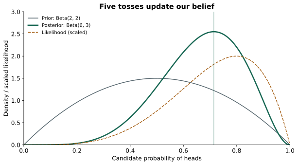
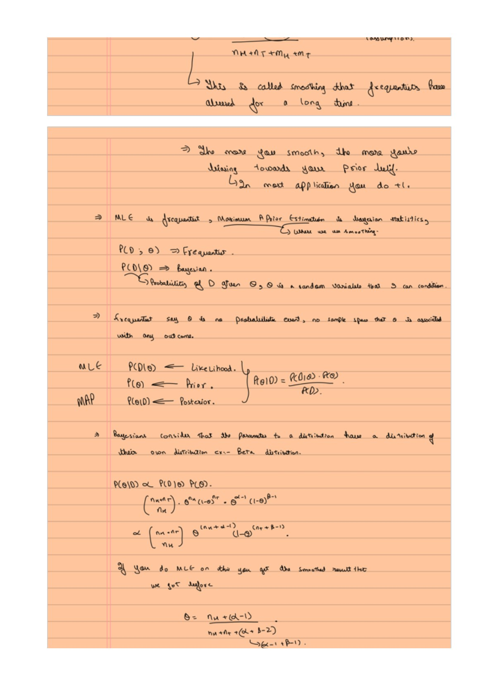

MLE, MAP, and Bayesian Prediction
Expanded from MLE.pdf · View a handwritten page
We observe five coin tosses. Four are heads. What should we believe about the next toss? This one question takes us through likelihood, maximum likelihood estimation, priors, MAP, and Bayesian prediction. We will keep the observations fixed so that each new idea has something familiar to attach to.
Start with the observations
| Toss | 1 | 2 | 3 | 4 | 5 |
|---|---|---|---|---|---|
| Outcome | H | H | T | H | H |
Let $\theta$ be the coin's chance of heads. It is an unknown number between 0 and 1. For this model, tosses are independent once $\theta$ is fixed, and the same $\theta$ applies to every toss. A candidate $\theta=0.8$ gives each observed head probability 0.8 and the observed tail probability 0.2.
0.8 × 0.8 × 0.2 × 0.8 × 0.8 = 0.08192.
Now keep the observed sequence fixed and vary the candidate parameter. This gives the likelihood: a score for how well each candidate explains the observations.
| Candidate $\theta$ | Likelihood of our sequence |
|---|---|
| 0.5 | 0.03125 |
| 0.8 | 0.08192 |
| 0.9 | 0.06561 |
The 0.8 candidate scores best among these three. Moving to 0.9 helps explain the four heads but makes the observed tail harder to explain. Likelihood balances both. A likelihood value is not the probability that the parameter itself is correct.
If we record only the count “four heads in five tosses,” there are five possible positions for the tail. The binomial likelihood is therefore $5\theta^4(1-\theta)$. Multiplying every candidate's score by the same 5 leaves the best candidate unchanged.
Find the best likelihood
Maximum likelihood estimation, or MLE, selects the parameter with the largest likelihood. With $h$ observed heads and $t$ observed tails, where $h+t>0$, the likelihood of the observed sequence is:
The counts $h$ and $t$ are fixed observations. We vary only $\theta$:
When both counts are positive, the maximum lies between 0 and 1. Taking the logarithm preserves the maximizer and turns the product into a sum:
Differentiate with respect to $\theta$ and set the result to zero:
Multiplying by $\theta(1-\theta)$ gives $h(1-\theta)=t\theta$. Collect the terms containing $\theta$ to get $h=\theta(h+t)$, then divide:
The second derivative is negative when both counts are positive, so this stationary point is a maximum. If $t=0$, the maximum is at the endpoint $\theta=1$; if $h=0$, it is at $\theta=0$. Those confident endpoints are one reason we might want to incorporate information beyond a tiny sample.
Add a prior, then update it
A Bayesian model represents uncertainty about $\theta$ with a distribution. The prior describes that uncertainty before these observations. The posterior describes it after using them:
Here $D$ means our data. The missing proportionality constant makes the posterior integrate to one. It is the same for every $\theta$, so we can ignore it while finding the posterior's highest point.
A Beta prior is convenient for a probability because it lives between 0 and 1. Its two positive parameters, $\alpha$ and $\beta$, control its shape:
Choose $\alpha=\beta=2$. This prior is symmetric and favors values near 0.5 over values near either endpoint. By comparison, Beta(1, 1) is flat: its density is equal throughout the interval. It does not concentrate around 0.5.
Multiplying the prior by the likelihood adds the exponents. Our four heads and one tail turn Beta(2, 2) into Beta(6, 3). In general:
MAP chooses the posterior's highest point
Maximum a posteriori estimation, or MAP, selects the parameter where the posterior density is highest. With $h$ observed heads, $t$ observed tails, and a Beta$(\alpha,\beta)$ prior, the posterior is proportional to:
The counts $h$ and $t$ are fixed observations; $\alpha$ and $\beta$ are fixed prior parameters. We vary only $\theta$:
Taking the logarithm preserves the maximizer. Its terms that depend on $\theta$ are:
Differentiate with respect to $\theta$ and set the result to zero:
Multiplying by $\theta(1-\theta)$ gives $(h+\alpha-1)(1-\theta)=(t+\beta-1)\theta$. Collect the terms containing $\theta$ and divide to obtain:
This interior maximum exists when $h+\alpha>1$ and $t+\beta>1$; the log posterior is then strictly concave. Otherwise, check the boundary behavior or whether the density is flat. The offsets $\alpha-1$ and $\beta-1$ show how the prior changes the observed counts in the MAP formula.

Use MLE when you have ample data relative to the model's complexity and no strong prior information. It fits the model using the likelihood alone, so there is no prior to specify.
Use MAP when data are limited or useful prior knowledge is available. A sensible prior can stabilize estimates and reduce extreme fits; in regression, this becomes regularization. The trade-off is that the prior influences the answer. With enough informative data, a fixed prior often matters less.
Predict the next toss
We have a whole posterior distribution, so we can average predictions over it. A candidate $\theta=0.6$ predicts heads with probability 0.6; a candidate 0.9 predicts 0.9. Weight every candidate's prediction by its posterior density.
For a Beta posterior, this integral is its mean. In our example:
= (4 + 2) / (5 + 2 + 2) = 6/9 = 2/3.
| Method | Result | What we calculated |
|---|---|---|
| MLE | 0.8000 | Best likelihood parameter |
| MAP | 0.7143 | Highest posterior-density parameter |
| Bayesian prediction | 0.6667 | Average next-toss prediction over the posterior |
A Beta(1, 1) prior would make MAP equal MLE here, while its posterior predictive probability would be 5/7. A flat prior therefore does not make every Bayesian answer identical to MLE. As the number of tosses grows with the prior fixed, the observed counts increasingly dominate these estimates.
Check your understanding: what if both observed tosses are heads?
MLE is 1. With Beta(2, 2), the posterior is Beta(4, 2), MAP is 3/4, and the next-head probability is 4/6. Two observations have changed our belief without eliminating uncertainty about tails.
Carry the same idea into machine learning
In regression, the unknown parameter becomes a vector of coefficients. Likelihood scores those coefficients using the observed outputs. A prior expresses preferences for their values. MAP combines the two; Bayesian prediction averages over the posterior distribution of coefficients.
The star marks a new input and its unknown output. This is the prediction idea behind the Gaussian/Bayesian discussion at the end of the handwritten notes. In the next guide, Gaussian observation noise will turn maximum likelihood into squared-error fitting.
The notes also introduce two ways to build classifiers. A generative classifier models each class's input distribution $p(x\mid y)$ and its frequency $p(y)$, then uses Bayes' rule. A discriminative classifier directly models $p(y\mid x)$. We will calculate the former with Naïve Bayes and the latter with logistic regression. Under equal costs for classification mistakes, the Bayes decision rule selects the class with the largest posterior probability.
From the handwritten notes
This guide expands MLE.pdf with worked tables and intermediate steps. The PDF contains all the original pages.
View original page 3


Further reading:
What MLE and MAP maximize
| Expression | Name | What we do |
|---|---|---|
| $P(D\mid\theta)$ | Likelihood | MLE chooses the $\theta$ that maximizes it. |
| $P(\theta\mid D)$ | Posterior | MAP chooses the $\theta$ that maximizes it. |
Think of the likelihood and posterior as curves over possible parameter values. The MLE and MAP estimates are the parameter values at their respective peaks.